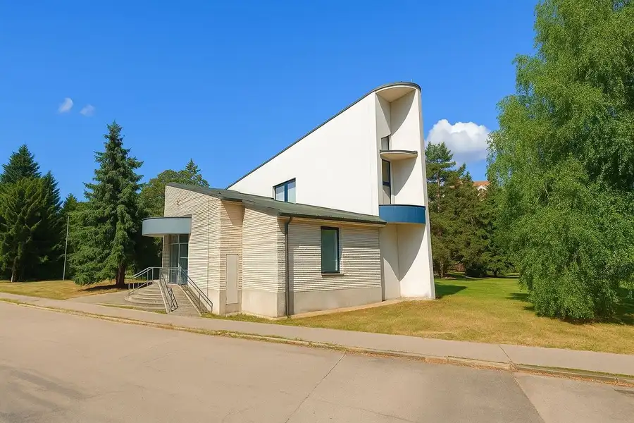
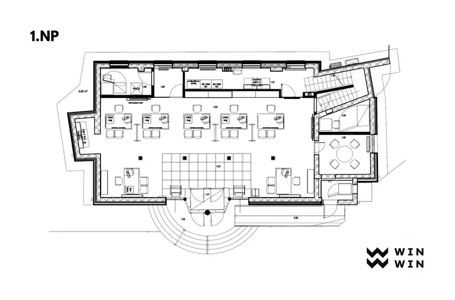
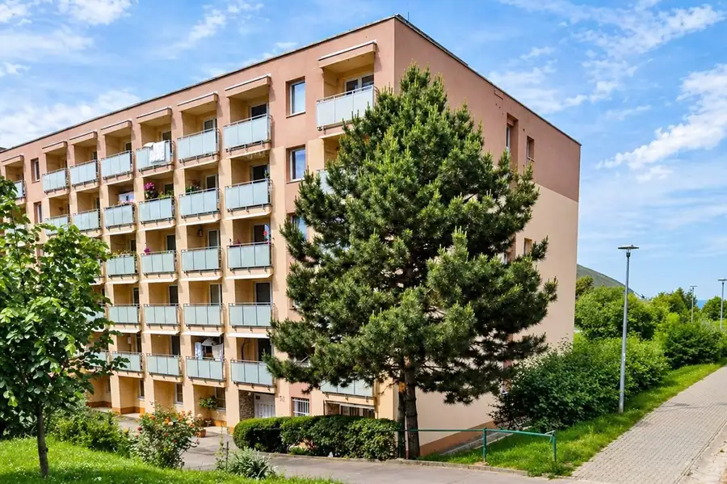
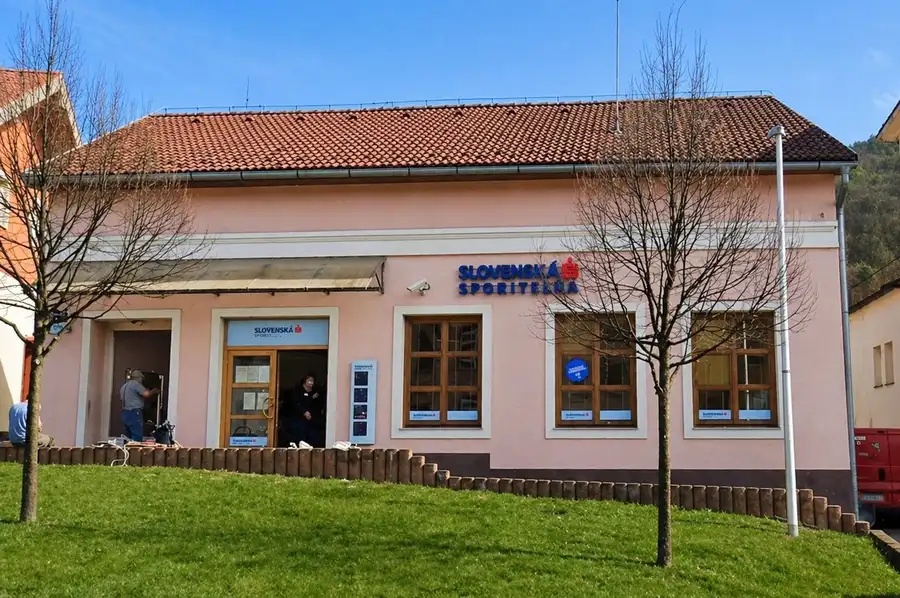
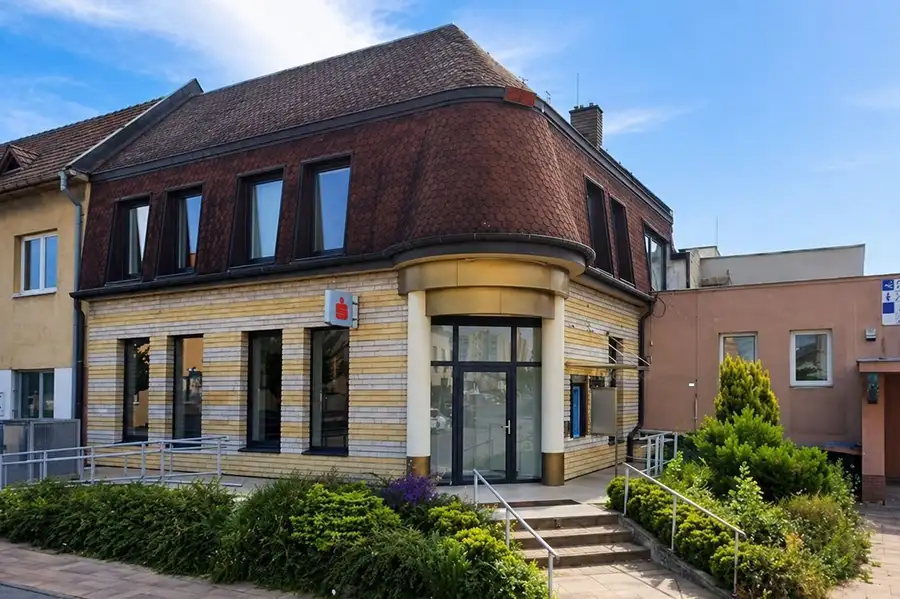

Administratívna Budova, P. O. Hviezdoslava, Nová Dubnica
Nová Dubnica


- Plocha263 m²
- StavKompletná rekonštrukcia
- VlastníctvoFiremné
O nehnuteľnosti
WIN - WIN ponúka na predaj budovu v centre Novej Dubnice, ktorá ponúka variabilné možnosti využitia pre obchod, služby alebo administratívu. Vďaka svojej polohe a veľkorysej dispozícii je atraktívna ako vlastné podnikateľské sídlo aj ako investičná príležitosť.• Lokalita: Nová Dubnica, P. O. Hviezdoslava 780/20• Druh stavby: polyfunkčný objekt – obchod, služby, administratíva• Územný plán: občianska vybavenosť mestského významu.• Celková podlahová plocha: 263 m²• Počet podlaží: 2 nadzemné podlažia • Pozemok: 416 m²• Rok kolaudácie: 1994 • Rekonštrukcia: 2013• IS: voda, kanalizácia, elektrina optická sieť• Kamerový systém, dátové rozvody.• Klimatizácia (3 jednotky Daikin)• Záujem o spätný nájom 5 m² za účelom prevádzkovania bankomatuDispozícia:Budova má dve nadzemné podlažia. Dispozičné a účelové riešenie je zhotovené s ohľadom na doterajší účel využívania budovy ako banková pobočka.• 1. NP: banková hala, rokovacia miestnosť, miestnosť pre bankomat, trezor, serverovňa.• 2. NP: hygienické a sociálne zázemie, kuchynka, šatňa, kancelárske priestory, kotolňa, zvyšok povala.Využitie:Budova je podľa územného plánu určená na občiansku vybavenosť mestského významu, čo otvára široké možnosti využitia. Je vhodná pre administratívu, obchod, showroom či služby. Vďaka polohe v centre a praktickej dispozícii ponúka využitie ako sídlo firmy, kancelárie, predajňa, kaviareň, kaderníctvo alebo polyfunkčný priestor spájajúci viacero činností.Lokalita:Objekt sa nachádza v centre mesta Nová Dubnica na ulici P. O. Hviezdoslava, v blízkosti mestského úradu, pošty, škôl a obchodov. Má výbornú dopravnú dostupnosť – autobusové spojenie, železničná stanica v Trenčianskej Teplej a rýchly prístup na diaľnicu D1 (Trenčín – Ilava). Parkovanie je možné na mestských plochách pri budove.Cena: 290.000,- €Cena zahŕňa províziu a profesionálny servis realitnej kancelárie WIN – WINPre bližšie informácie ma neváhajte kontaktovať!Jana Vinšová+421 905 164 336jana.vinsova@win-win.sk
Parametre
- Druh
- Administratívny objekt
- Dátum zverejnenia
- 26. 08. 2025
- Elektrina
- Na pozemku - 230 V
- Energetický certifikát budovy
- nie je
- Odpadové vody
- Na pozemku - Kanalizácia
- Plocha pozemku
- 416 m²
- Plyn
- Nedostupné
- Počet nadzemných podlaží
- 2
- Rok výstavby
- 1996
- Stav nehnuteľnosti
- Kompletná rekonštrukcia
- Telekomunikácie
- Optická sieť
- Typ
- Predaj
- Typ konštrukcie
- Zmiešaná
- Vlastníctvo
- Firemné
- Voda
- Na pozemku - Diaľkový vodovod
- Vykurovanie
- Ústredné
- Zastavaná plocha
- 263 m²
- Úžitková plocha
- 263 m²
Kde to je


Mohlo by Vás zaujímať

BytNové 137 000 €Predaj 2 izbový byt, 2 Loggie, 2.p./6 p., Lavičková ul., Trenčín Trenčín 2-izbový58.23 m²2. podlažie
Komerčné priestoryNové Cena na vyžádáníPredaj polyfunkčná budova, Nová Baňa - Bernolákova ul. Nová Baňa 239.88 m²
Komerčné priestoryNové Cena na vyžádáníPredaj polyfunkčná budova, Železničná ulica, Nemšová Nemšová 264.75 m²